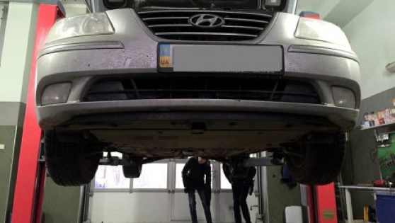
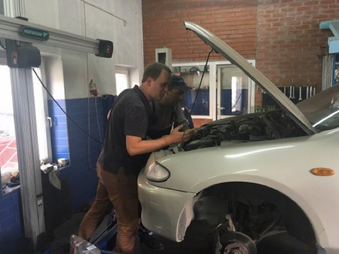
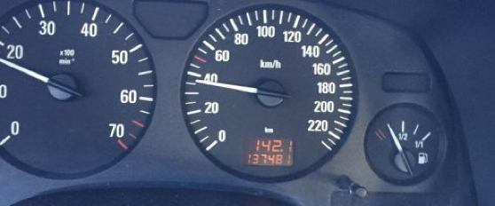

П`ять правил безпечного ремонту автомобіля за
адекватні гроші
«Умілий» майстер може завищити вартість ремонту та ТО в рази. При цьому зробить це так, що ви йому ще й дякую скажете. Як цього уникнути? Треба знати кілька деталей. Поїхали.
Звертайтесь на СТО вчасно, але лише у разі потреби
Основна стаття витрат на ремонт – планове ТО через 10-15 тис. км. Ну, або щорічний, в залежності від того що швидше. Взагалі «річна» прив’язка – умовна, її придумали для того, щоб прив’язати візити до гарантійних станцій технічного обслуговування. Але легковажити ТО не можна – від цього залежить безпека їзди. Цим власне майстри та гарантійні СТО і користуються.
В процесі діагностики майстер перевіряє стан автомобіля та рекомендує ті вузли і частини, які потрібно замінити. Ось тут і розпочинається найцікавіше.
Переконайтеся що розумієте кожен пункт рахунку
Якщо ви не маєте стовідсоткової впевненості в СТО, на якому знаходитесь, вам потрібно бути присутнім самому при діагностиці автомобіля. Попросити, щоб майстер показав на несправність, яку потрібно виправити.
Так, ви далекі від автомобільного світу, але майстру буде важко вигадати чогось, що не існує і розповісти про нього, а от вкласти в рахунок це – дуже просто. Звісно, вас можуть і не впустити в приміщення, але конкуренція зараз висока – можна наполягати.
Очі не бачать – запчастини нема
Для кожного планового ТО є перелік запчастин, які слід замінити за стандартними процедурами. Як правило це фільтри та масло, плюс додатково виявлені пошкодження по ходовій частині.
Машинне масло – один з найбільш небезпечних продуктів, його легко підробити. Саме тому раджу не економити і купувати в перевірених місцях. Масло для двигуна – це як кров для організму, фальсифікат може просто вбити двигун.
Як перевірити чи проведена заміна? Дуже просто -- сказати майстру перед початком робіт, аби все, що було замінено, лежало в багажнику. Запчастини в коробочках. Поруч – порожня тара від масла.

В моїй практиці були випадки, коли керівництво СТО не знало, що «добросовісний» працівник не проводив заміну оплачених запчастин. Авто заїжджало в бокс, висіло на підйомнику, а далі ці запчастини і рідини ставали додатковим заробітком для майстра та бомбою сповільненої дії для власника автомобіля.
Історію хвороби треба знати самому
Пробіг в автомобілі – надзвичайно важливий показник. Від нього залежать всі регламентні роботи та заміна запчастин, які необхідні для безпечної експлуатації. Цього правила дотримуються офіційні сервіси (дилерські СТО) для гарантійних авто, які забезпечені технічною документацію
На звичайних приватних СТО ситуація інша – в більшості випадків ремонт відбувається після поломки, а не для її запобігання. Це дешевше, але зобов’язує власника самостійно відстежувати що, як і коли міняти замінювати в автомобілі. Якщо ви – не перший власник і автомобіль вживаний – розуміти послідовність ремонтів складно, адже відсутня інформація про історію обслуговування попереднім власником.
В таких випадках після придбання, рекомендую замінити привідні ремені (ГРМ), ролики, та масла з фільтрами, щоб бути впевненим в безпеці і вести власний відлік.
Comments